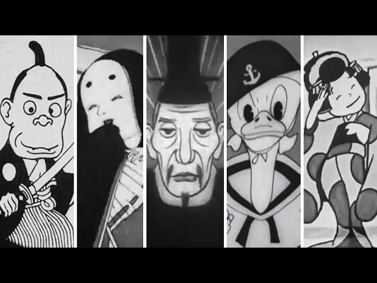

Anime is now known as hand drawn computer generated animations coming from manga panels. However, when it was first created dates back to the early 1900's. However, it is unknown whether it was shown to a public audience or not, but later in the 1950's it found its success after it was being adapted from manga novel panels and bringing characters audiences loved reading about to life using just chalk and board, but after a few years in the late 1950's they began to add colour and progressed from there onwards.
